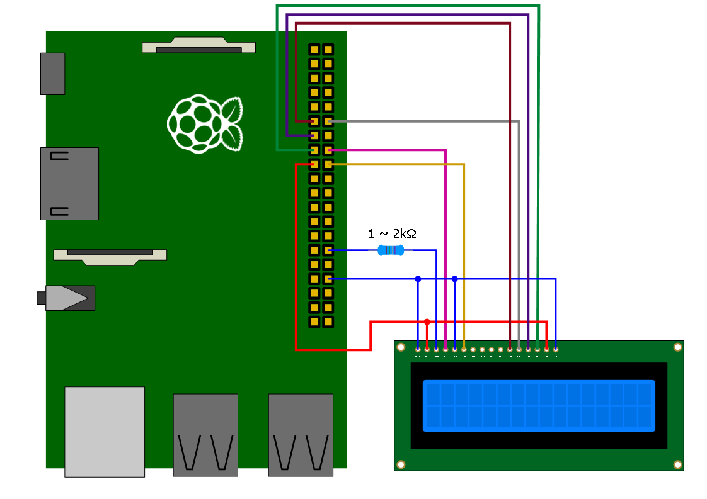
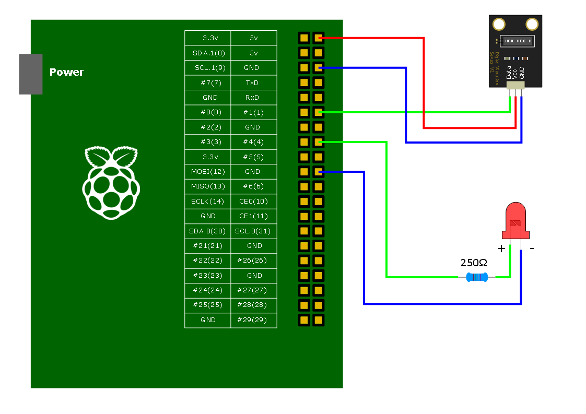

Pi Application
Raspberry Pi에 관련된 예제는 다음 홈페이지에서 찾을 수 있다. 특히 Adafruit은 다양한 제품을 판매 뿐만아니라 테스트 방법에 대한 가이드를 제공하므로 강추 함.
Raspberry Pi Village: http://www.rasplay.org/
WiringPi Hompage: http://wiringpi.com/
Adafruit: https://www.adafruit.com/
Wiring Pi 설치
Raspberry Pi는 입출력 신호 제어를 위해 다음과 같은 40pin(Model B의 경우 26pin)
포트를 제공하고 있다.
Wiring Pi 설치는 git 서버로 부터 파일을 복사한 후 빌드하면 된다.
pi@raspberrypi ~$ git clone git://git.drogon.net/wiringPi
Cloning into 'wiringPi'...
remote: Counting objects: 657, done.
remote: Compressing objects: 100% (599/599), done.
remote: Total 657 (delta 476), reused 95 (delta 58)
Receiving objects: 100% (657/657), 247.61 KiB | 94 KiB/s, done.
Resolving deltas: 100% (476/476), done.
pi@raspberrypi ~$ cd wiringPi
pi@raspberrypi ~/wiringPi$ ./build
Pin Layout은 'readall' 명령으로 확인 가능하다. Wiring Pi는 자체적인 Pin Map을 사용하는데
wPi로 표시된 부분은 Wiring Pi에서 사용하는 GPIO 핀 번호이다.
pi@raspberrypi~$ gpio readall
+-----+-----+---------+------+---+--B Plus--+---+------+---------+-----+-----+
| BCM | wPi | Name | Mode | V | Physical | V | Mode | Name | wPi | BCM |
+-----+-----+---------+------+---+----++----+---+------+---------+-----+-----+
| | | 3.3v | | | 1 || 2 | | | 5v | | |
| 2 | 8 | SDA.1 | IN | 1 | 3 || 4 | | | 5V | | |
| 3 | 9 | SCL.1 | IN | 1 | 5 || 6 | | | 0v | | |
| 4 | 7 | GPIO. 7 | IN | 0 | 7 || 8 | 1 | ALT0 | TxD | 15 | 14 |
| | | 0v | | | 9 || 10 | 1 | ALT0 | RxD | 16 | 15 |
| 17 | 0 | GPIO. 0 | IN | 0 | 11 || 12 | 0 | IN | GPIO. 1 | 1 | 18 |
| 27 | 2 | GPIO. 2 | IN | 0 | 13 || 14 | | | 0v | | |
| 22 | 3 | GPIO. 3 | IN | 0 | 15 || 16 | 0 | IN | GPIO. 4 | 4 | 23 |
| | | 3.3v | | | 17 || 18 | 0 | IN | GPIO. 5 | 5 | 24 |
| 10 | 12 | MOSI | IN | 0 | 19 || 20 | | | 0v | | |
| 9 | 13 | MISO | IN | 0 | 21 || 22 | 0 | IN | GPIO. 6 | 6 | 25 |
| 11 | 14 | SCLK | IN | 0 | 23 || 24 | 0 | IN | CE0 | 10 | 8 |
| | | 0v | | | 25 || 26 | 0 | IN | CE1 | 11 | 7 |
| 0 | 30 | SDA.0 | IN | 0 | 27 || 28 | 0 | IN | SCL.0 | 31 | 1 |
| 5 | 21 | GPIO.21 | IN | 0 | 29 || 30 | | | 0v | | |
| 6 | 22 | GPIO.22 | IN | 0 | 31 || 32 | 0 | IN | GPIO.26 | 26 | 12 |
| 13 | 23 | GPIO.23 | IN | 0 | 33 || 34 | | | 0v | | |
| 19 | 24 | GPIO.24 | IN | 0 | 35 || 36 | 0 | IN | GPIO.27 | 27 | 16 |
| 26 | 25 | GPIO.25 | IN | 0 | 37 || 38 | 0 | IN | GPIO.28 | 28 | 20 |
| | | 0v | | | 39 || 40 | 0 | IN | GPIO.29 | 29 | 21 |
+-----+-----+---------+------+---+----++----+---+------+---------+-----+-----+
| BCM | wPi | Name | Mode | V | Physical | V | Mode | Name | wPi | BCM |
+-----+-----+---------+------+---+--B Plus--+---+------+---------+-----+-----+

GPIO LED 출력 테스트
GPIO를 이용하여 간단히 LED를 켜는 테스트를 해보자. 다음과 같이 LED와 저항을 GPIO 1번에 연결한다.
다음과 같이 c코드를 작성한다.
//LED Test Code
//filename ledtest.c
#include <stdio.h>
#include <wiringPi.h>
#define LED1 1
int main(void)
{
if(wiringPiSetup() == -1)
return 1;
pinMode(LED1, OUTPUT);
digitalWrite(LED1, 1);
return 0;
}
컴파일시 '-lwiringPi' 를 추가해 준다
pi@raspberrypi ~$ gcc -o ledtest ledtest.c -lwiringPi
pi@raspberrypi ~$ sudo ./ledtest
LED에 불이 들어오면 성공!
GPIO Button 입력테스트
버튼을 누르면 LED가 켜지는 테스트를 해보자. 다음과 같이 회로를 구성한다.
소스코드는 다음과 같다.
//Button Input Test Code
//filename: buttonTest.c
#include <stdio.h>
#include <wiringPi.h>
#define LED 4
#define BUTTON 1
int main(void)
{
if(wiringPiSetup() == -1)
return 1;
pinMode(LED, OUTPUT);
pinMode(BUTTON, INPUT);
digitalWrite(LED, 0);
int input = 0;
for(;;)
{
if(digitalRead(BUTTON))
digitalWrite(LED, 1);
else
digitalWrite(LED, 0);
delay(100);
}
return 0;
}
컴파일 후 실행한다.
pi@raspberrypi ~$ gcc -o buttonTest buttonTest.c -lwiringPi
pi@raspberrypi ~$ sudo ./buttonTest
버튼을 눌렀을 때 불이 들어오면 성공!
PRI Motion 센서 테스트
PIR Motion 센서를 이용하여 동작을 감지해 보자. 다음과 같이 회로를 구성한다.
소스코드는 다음과 같다.
//PRI Motion Test Code
//filename: pir.c
#include <stdio.h>
#include <wiringPi.h>
#define PIR 1
int main(void)
{
if(wiringPiSetup() == -1)
return 1;
pinMode(PIR, INPUT);
int input = 0;
for(;;)
{
if(digitalRead(PIR))
printf("Motion Detected!\n");
delay(100);
}
return 0;
}
컴파일 후 실행한다.
pi@raspberrypi ~$ gcc -o pir pir.c -lwiringPi
pi@raspberrypi ~$ sudo ./pir
Motion이 감지되면 성공!
DHT11 온습도테스트
DHT11 센서를 이용하여 온도와 습도를 읽어 보자. 다음과 같이 회로를 구성한다.

소스코드는 다음과 같다.
//DHT11 Test Code
//filename: dht11.c
#include <wiringPi.h>
#include <stdio.h>
#include <stdlib.h>
#include <stdint.h>
#define MAX_TIME 85
#define DHT11PIN 1
int dht11_val[5]={0,0,0,0,0};
void dht11_read_val()
{
uint8_t lststate=HIGH;
uint8_t counter=0;
uint8_t j=0,i;
for(i=0;i<5;i++)
dht11_val[i]=0;
pinMode(DHT11PIN,OUTPUT);
digitalWrite(DHT11PIN,LOW);
delay(18);
digitalWrite(DHT11PIN,HIGH);
delayMicroseconds(40);
pinMode(DHT11PIN,INPUT);
for(i=0;i<MAX_TIME;i++)
{
counter=0;
while(digitalRead(DHT11PIN)==lststate){
counter++;
delayMicroseconds(1);
if(counter==255)
break;
}
lststate=digitalRead(DHT11PIN);
if(counter==255)
break;
// top 3 transistions are ignored
if((i>=4)&&(i%2==0)){
dht11_val[j/8]<<=1;
if(counter>16)
dht11_val[j/8]|=1;
j++;
}
}
// verify cheksum and print the verified data
if((j>=40)&&(dht11_val[4]==((dht11_val[0]+dht11_val[1]+dht11_val[2]+dht11_val[3])& 0xFF)))
{
farenheit=dht11_val[2]*9./5.+32;
printf("H = %d.%d\nT = %d.%d\n",dht11_val[0],dht11_val[1],dht11_val[2],dht11_val[3]);
}
else
printf("Invalid Data!!\n");
}
int main(void)
{
if(wiringPiSetup()==-1)
exit(1);
while(1)
{
dht11_read_val();
delay(1000);
}
return 0;
}
컴파일 후 실행한다.
pi@raspberrypi ~$ gcc -o dht11 dht11.c -lwiringPi
pi@raspberrypi ~$ sudo ./dht11
온습도 값이 출력되면 성공!
DHT22 온습도테스트
DHT22 센서를 이용하여 온도와 습도를 읽어 보자. DHT22센서는 DHT11보다 정밀한 센서이다.

소스코드는 다음과 같다.
//DHT22 Test Code
//filename: dht22.c
#include <wiringPi.h>
#include <stdio.h>
#include <stdlib.h>
#include <stdint.h>
#define MAX_TIME 85
#define DHT22PIN 1
int dht22_val[5]={0,0,0,0,0};
void dht22_read_val()
{
uint8_t lststate=HIGH;
uint8_t counter=0;
uint8_t j=0,i;
for(i=0;i<5;i++)
dht22_val[i]=0;
pinMode(DHT22PIN,OUTPUT);
digitalWrite(DHT22PIN,LOW);
delay(18);
digitalWrite(DHT22PIN,HIGH);
delayMicroseconds(40);
pinMode(DHT22PIN,INPUT);
for(i=0;i<MAX_TIME;i++)
{
counter=0;
while(digitalRead(DHT22PIN)==lststate){
counter++;
delayMicroseconds(1);
if(counter==255)
break;
}
lststate=digitalRead(DHT22PIN);
if(counter==255)
break;
// top 3 transistions are ignored
if((i>=4)&&(i%2==0)){
dht22_val[j/8]<<=1;
if(counter>16)
dht22_val[j/8]|=1;
j++;
}
}
// verify cheksum and print the verified data
if((j>=40)&&(dht22_val[4]==((dht22_val[0]+dht22_val[1]+dht22_val[2]+dht22_val[3])& 0xFF)))
{
float t, h;
h = (float)dht22_val[0] * 256 + (float)dht22_val[1];
h /= 10;
t = (float)(dht22_val[2] & 0x7F)* 256 + (float)dht22_val[3];
t /= 10.0;
if ((dht22_val[2] & 0x80) != 0) t *= -1;
printf("Humidity = %.2f %% Temperature = %.2f *C \n", h, t );
}
else
printf("Data not good, skip\n");
}
int main(void)
{
if(wiringPiSetup()==-1)
exit(1);
while(1)
{
dht22_read_val();
delay(1000);
}
return 0;
}
컴파일 후 실행한다.
pi@raspberrypi ~$ gcc -o dht22 dht22.c -lwiringPi
pi@raspberrypi ~$ sudo ./dht22
온습도 값이 출력되면 성공!
DS1820 온도테스트
DS1820 센서를 이용하여 온도를 읽어 보자.

소스코드는 다음과 같다.
//DS1820 Test Code
//filename: ds1820.c
#include <stdio.h>
#include <string.h>
#include <stdlib.h>
#include <stdint.h>
#include <wiringPi.h>
#define PIN_NUM 1
float ds1820_read();
int onewire_reset();
void onewire_write(uint8_t data);
void onewire_write_bit(int bit);
uint8_t onewire_read();
int onewire_read_bit();
uint8_t crc_read();
uint8_t crc_cal(uint8_t crc, uint8_t data);
int main()
{
if(wiringPiSetup() == -1)
return 1;
float temp = 0.0f;
while(1)
{
temp = ds1820_read();
printf("%.1f\n", temp);
delay(1000);
}
}
float ds1820_read()
{
uint8_t busy = 1;
onewire_reset();
onewire_write(0xCC);
onewire_write(0x44);
delay(750);
while(busy == 0)
{
busy = onewire_read();
printf("busy: %d\n", busy);
}
onewire_reset();
onewire_write(0xCC);
onewire_write(0xBE);
uint8_t lsb, msb, th, tl, reserved1, reserved2, count_remain, count_per_c, crc;
float real_temp = 0.0f;
signed char temp_read = 0;
lsb = onewire_read();
msb = onewire_read();
th = onewire_read();
tl = onewire_read();
reserved1 = onewire_read();
reserved2 = onewire_read();
count_remain = onewire_read();
count_per_c = onewire_read();
crc = onewire_read();
uint8_t data[] = {lsb, msb, th, tl, reserved1, reserved2, count_remain, count_per_c};
onewire_reset();
if(crc_read(data) == crc)
{
temp_read = (signed char)(lsb>>1);
if(msb == 255)
temp_read = temp_read | 0x80;
real_temp = (float)temp_read + 0.85f - (float)count_remain/(float)count_per_c;
real_temp = (int)(real_temp * 10) / 10.0f;
}
else
printf("CRC Error ");
return real_temp;
}
int onewire_reset()
{
int result;
pinMode(PIN_NUM, OUTPUT);
digitalWrite(PIN_NUM, LOW);
delayMicroseconds(480);
pinMode(PIN_NUM, INPUT);
delayMicroseconds(70);
result = digitalRead(PIN_NUM);
delayMicroseconds(410);
return result;
}
void onewire_write(uint8_t data)
{
int loop;
for(loop=0; loop<8; loop++)
{
onewire_write_bit(data & 0x01);
data >>= 1;
}
}
void onewire_write_bit(int bit)
{
pinMode(PIN_NUM, OUTPUT);
if(bit)
{
digitalWrite(PIN_NUM, LOW);
delayMicroseconds(6);
digitalWrite(PIN_NUM, HIGH);
delayMicroseconds(64);
}
else
{
digitalWrite(PIN_NUM, LOW);
delayMicroseconds(60);
digitalWrite(PIN_NUM, HIGH);
delayMicroseconds(10);
}
}
uint8_t onewire_read()
{
int loop, result=0;
for(loop=0; loop<8; loop++)
{
result >>= 1;
if(onewire_read_bit())
result |= 0x80;
}
return result;
}
int onewire_read_bit()
{
int result;
pinMode(PIN_NUM, OUTPUT);
digitalWrite(PIN_NUM, LOW);
delayMicroseconds(6);
pinMode(PIN_NUM, INPUT);
delayMicroseconds(9);
result = digitalRead(PIN_NUM) & 0x01;
delayMicroseconds(55);
return result;
}
uint8_t crc_read(uint8_t *data)
{
uint8_t i, crc;
crc = 0x00;
for(i=0; i<8; i++)
crc = crc_cal(crc, data[i]);
return crc;
}
uint8_t crc_cal(uint8_t crc, uint8_t data)
{
int j;
for(j=0;j<8;j++) {
if ((data & 0x01 ) ^ (crc & 0x01)) {
// DATA ^ LSB CRC = 1
crc = crc>>1;
// Set the MSB to 1
crc = crc | 0x80;
// Check bit 3
if (crc & 0x04) {
crc = crc & 0xFB; // Bit 3 is set, so clear it
} else {
crc = crc | 0x04; // Bit 3 is clear, so set it
}
// Check bit 4
if (crc & 0x08) {
crc = crc & 0xF7; // Bit 4 is set, so clear it
} else {
crc = crc | 0x08; // Bit 4 is clear, so set it
}
} else {
// DATA ^ LSB CRC = 0
crc = crc>>1;
// clear MSB
crc = crc & 0x7F;
// No need to check bits, with DATA ^ LSB CRC = 0, they will remain unchanged
}
data = data>>1;
}
return crc;
}
컴파일 후 실행한다.
pi@raspberrypi ~$ gcc -o ds1820 ds1820.c -lwiringPi
pi@raspberrypi ~$ sudo ./ds1820
온도 값이 출력되면 성공!
LCD1602 테스트
Character LCD를 이용하여 날짜 및 시간을 출력해 보자.

소스코드는 다음과 같다.
//lcd1602 Test code
//filename: lcd.c
#include <stdio.h>
#include <wiringPi.h>
#include <lcd.h>
#include <time.h>
#define TRUE 1
#define FALSE 0
int main(void)
{
if(wiringPiSetup() == -1)
{
printf("Unable to start wiringPi\n");
return 1;
}
int fd;
fd = lcdInit(2, 16, 4, 4,5, 0,1,2,3,0,0,0,0);
printf("%d\n", fd);
lcdHome(fd);
lcdCursor(fd, TRUE);
lcdCursorBlink(fd, FALSE);
struct tm *t;
time_t timer;
while(TRUE)
{
timer = time(NULL);
t = localtime(&timer);
lcdPosition(fd, 0,0);
lcdPrintf(fd, "%4d.%02d.%02d", t->tm_year+1900, t->tm_mon+1, t->tm_mday);
lcdPosition(fd, 0,1);
lcdPrintf(fd, "%02d:%02d:%02d", t->tm_hour, t->tm_min, t->tm_sec);
delay(100);
}
return 0;
}
컴파일 후 실행한다.
pi@raspberrypi ~$ gcc -o lcd lcd.c -lwiringPi -lwiringPiDev
pi@raspberrypi ~$ sudo ./lcd
날짜와 시간이 출력되면 성공!
LCD1604 테스트
LCD1602와 동일하지만 라인이 2개 더 출력되는 LCD1604를 사용해보자

코드작성에 앞서 wiringPi 코드를 수정해야한다. 현재 2.29v wiringPi의 경우 lcd offset 주소가 잘못되어 있어 코드를 그대로 사용할 경우 3번째 Line부터 제대로 출력되지 않는
문제점이 있다. 따라서 코드를 수정 후 사용하도록 한다. wiringPi/devLib/lcd.c 파일을 열어 lcdPosition 함수를 다음과 같이 수정한다.
void lcdPosition (const int fd, int x, int y)
{
static unsigned char rowOff [4] ;
struct lcdDataStruct *lcd = lcds [fd] ;
if ((x > lcd->cols) || (x < 0))
return ;
if ((y > lcd->rows) || (y < 0))
return ;
if (lcd->rows == 4 && lcd->cols == 16)
{
rowOff[0] = 0x00; rowOff[1] = 0x40; rowOff[2] = 0x10; rowOff[3] = 0x50;
}
else
{
rowOff[0] = 0x00; rowOff[1] = 0x40; rowOff[2] = 0x14; rowOff[3] = 0x54;
}
putCommand (lcd, x + (LCD_DGRAM | rowOff [y])) ;
lcd->cx = x ;
lcd->cy = y ;
}
코드를 수정했으면 wiringPi를 다시 빌드한다.
pi@raspberrypi ~/wiringPi $ ./build clean
pi@raspberrypi ~/wiringPi $ ./build
lcd1604 소스코드는 다음과 같다.
//lcd1604 Test code
//filename: lcd1604.c
#include <stdio.h>
#include <wiringPi.h>
#include <lcd.h>
#define TRUE 1
#define FALSE 0
int main(void)
{
if(wiringPiSetup() == -1)
{
printf("Unable to start wiringPi\n");
return 1;
}
int fd;
fd = lcdInit(4, 16, 8, 28, 29, 0,1,2,3,4,5,6,7);
lcdHome(fd);
lcdCursor(fd, TRUE);
lcdCursorBlink(fd, FALSE);
lcdPosition(fd, 0,0);
lcdPrintf(fd, "Line1");
lcdPosition(fd, 0,1);
lcdPrintf(fd, "Line2");
lcdPosition(fd, 0,2);
lcdPrintf(fd, "Line3");
lcdPosition(fd, 0,3);
lcdPrintf(fd, "Line4");
return 0;
}
컴파일 후 실행한다.
pi@raspberrypi ~$ gcc -o lcd1604 lcd1604.c -lwiringPi -lwiringPiDev
pi@raspberrypi ~$ sudo ./lcd1604
글자가 출력되면 성공!
Vibration Sensor 테스트
진동센서를 이용하여 진동이 감지될 경우 LED를 켜는 테스트를 해보자.

소스코드는 다음과 같다.
//Vibration Sensor Test code
//filename: vibration.c
#include <stdio.h>
#include <wiringPi.h>
void function(void);
int main(void)
{
if(wiringPiSetup() == -1)
{
printf("Unable to start wiringPi\n");
return 1;
}
pinMode(4, OUTPUT);
wiringPiISR(1, INT_EDGE_FALLING, &function);
while(1)
{
}
return 0;
}
void function(void)
{
digitalWrite(4, 1);
delay(10);
digitalWrite(4, 0);
}
컴파일 후 실행한다.
pi@raspberrypi ~$ gcc -o vibration vibration.c -lwiringPi
pi@raspberrypi ~$ sudo ./vibration
진동 센서를 흔들었을 때 LED불이 깜빡이면 성공!
SHT71 Sensor 테스트
SHT71 온습도 센서를 이용하여 값을 읽어 보자.
테스트에 대한 기본 코드는 다음 사이트를 참고 하였다.
https://www.john.geek.nz/2012/08/reading-data-from-a-sensirion-sht1x-with-a-raspberry-pi/
위 사이트는 BCM2835 Library를 사용하여 GPIO를 제어한다. 따라서 별도의 BCM2835 Library를
설치해야 하므로 되도록 같은 Library를 사용하기 위해 코드를 wiringPi 함수로 변경하였다.

변경된 소스코드는 다음과 같다.
//SHT71 Sensor Test code
//filename: testSHT1x.c
// Compile with: gcc -o testSHT1x ./../bcm2835-1.3/src/bcm2835.c ./RPi_SHT1x.c testSHT1x.c
/*
Raspberry Pi SHT1x communication library.
By: John Burns (www.john.geek.nz)
Date: 14 August 2012
License: CC BY-SA v3.0 - http://creativecommons.org/licenses/by-sa/3.0/
This is a derivative work based on
Name: Nice Guy SHT11 library
By: Daesung Kim
Date: 04/04/2011
Source: http://www.theniceguy.net/2722
Dependencies:
BCM2835 Raspberry Pi GPIO Library - http://www.open.com.au/mikem/bcm2835/
Sensor:
Sensirion SHT11 Temperature and Humidity Sensor interfaced to Raspberry Pi GPIO port
SHT pins:
1. GND - Connected to GPIO Port P1-06 (Ground)
2. DATA - Connected via a 10k pullup resistor to GPIO Port P1-01 (3V3 Power)
2. DATA - Connected to GPIO Port P1-18 (GPIO 24)
3. SCK - Connected to GPIO Port P1-16 (GPIO 23)
4. VDD - Connected to GPIO Port P1-01 (3V3 Power)
Note:
GPIO Pins can be changed in the Defines of RPi_SHT1x.h
*/
#include "RPi_SHT1x.h"
void printTempAndHumidity(void)
{
unsigned char noError = 1;
value humi_val,temp_val;
int spin = 4;
int dpin = 5;
// Wait at least 11ms after power-up (chapter 3.1)
delay(20);
// Set up the SHT1x Data and Clock Pins
SHT1x_InitPins(spin, dpin);
// Reset the SHT1x
SHT1x_Reset(spin, dpin);
// Request Temperature measurement
noError = SHT1x_Measure_Start( spin, dpin ,SHT1xMeaT );
if (!noError) {
printf("Measure Start Error1\n");
return;
}
// Read Temperature measurement
noError = SHT1x_Get_Measure_Value( spin, dpin, (unsigned short int*) &temp_val.i );
if (!noError) {
printf("Measure Value Error1\n");
return;
}
// Request Humidity Measurement
noError = SHT1x_Measure_Start( spin, dpin, SHT1xMeaRh );
if (!noError) {
printf("Measure Start Error2\n");
return;
}
// Read Humidity measurement
noError = SHT1x_Get_Measure_Value( spin, dpin, (unsigned short int*) &humi_val.i );
if (!noError) {
printf("Measure Value Error2\n");
return;
}
// Convert intergers to float and calculate true values
temp_val.f = (float)temp_val.i;
humi_val.f = (float)humi_val.i;
// Calculate Temperature and Humidity
SHT1x_Calc(&humi_val.f, &temp_val.f);
//Print the Temperature to the console
printf("Temperature: %0.2f%cC ",temp_val.f,0x00B0);
//Print the Humidity to the console
printf("Humidity: %0.2f%%\n",humi_val.f);
}
int main ()
{
//Initialise the Raspberry Pi GPIO
if(wiringPiSetup() == -1)
{
printf("wiringPi Init Error\n");
return 1;
}
while(1)
{
printTempAndHumidity();
delay(1000);
}
return 1;
}
//SHT71 Sensor Test code
//filename: RPi_SHT1x.c
/*
Raspberry Pi SHT1x communication library.
By: John Burns (www.john.geek.nz)
Date: 14 August 2012
License: CC BY-SA v3.0 - http://creativecommons.org/licenses/by-sa/3.0/
This is a derivative work based on
Name: Nice Guy SHT11 library
By: Daesung Kim
Date: 04/04/2011
Source: http://www.theniceguy.net/2722
*/
#include "RPi_SHT1x.h"
/* Global variables of the SHT1x sensor */
unsigned char SHT1x_crc;
unsigned char SHT1x_status_reg = 0;
void SHT1x_Crc_Check(unsigned char value)
{
unsigned char i;
for (i=8; i; i--)
{
if ((SHT1x_crc ^ value) & 0x80)
{
SHT1x_crc «= 1;
SHT1x_crc ^= 0x31;
}
else
{
SHT1x_crc «= 1;
}
value «=1;
}
}
void SHT1x_InitPins( int spin, int dpin )
{
int RPI_GPIO_SHT1x_SCK = spin;
int RPI_GPIO_SHT1x_DATA = dpin;
// SCK line as output but set to low first
digitalWrite(RPI_GPIO_SHT1x_SCK, LOW);
pinMode(RPI_GPIO_SHT1x_SCK, OUTPUT);
digitalWrite(RPI_GPIO_SHT1x_SCK, LOW);
// DATA to input. External pull up.
// Set PORT to 0 => pull data line low by setting port as output
pullUpDnControl(RPI_GPIO_SHT1x_DATA, PUD_OFF);
digitalWrite(RPI_GPIO_SHT1x_DATA,LOW);
pinMode(RPI_GPIO_SHT1x_DATA, OUTPUT);
pullUpDnControl(RPI_GPIO_SHT1x_DATA, PUD_OFF);
digitalWrite(RPI_GPIO_SHT1x_DATA,LOW);
}
void SHT1x_Reset(int spin, int dpin)
{
int RPI_GPIO_SHT1x_SCK = spin;
int RPI_GPIO_SHT1x_DATA = dpin;
// Chapter 3.4
unsigned char i;
pinMode(RPI_GPIO_SHT1x_DATA, INPUT);
SHT1x_DELAY;
for (i=9; i; i--)
{
digitalWrite(RPI_GPIO_SHT1x_SCK, HIGH); SHT1x_DELAY;
digitalWrite(RPI_GPIO_SHT1x_SCK, LOW); SHT1x_DELAY;
}
SHT1x_Transmission_Start(spin, dpin);
SHT1x_Sendbyte(spin, dpin, SHT1x_RESET); // Soft reset
}
void SHT1x_Transmission_Start( int spin, int dpin )
{
int RPI_GPIO_SHT1x_SCK = spin;
int RPI_GPIO_SHT1x_DATA = dpin;
// Chapter 3.2
digitalWrite(RPI_GPIO_SHT1x_SCK, HIGH); SHT1x_DELAY;
digitalWrite(RPI_GPIO_SHT1x_DATA, LOW);
pinMode(RPI_GPIO_SHT1x_DATA, OUTPUT); SHT1x_DELAY;
digitalWrite(RPI_GPIO_SHT1x_SCK, LOW); SHT1x_DELAY;
digitalWrite(RPI_GPIO_SHT1x_SCK, HIGH); SHT1x_DELAY;
pinMode(RPI_GPIO_SHT1x_DATA, INPUT); SHT1x_DELAY;
digitalWrite(RPI_GPIO_SHT1x_SCK, LOW); SHT1x_DELAY;
// Reset crc calculation. Start value is the content of the status register.
SHT1x_crc = SHT1x_Mirrorbyte( SHT1x_status_reg & 0x0F );
}
unsigned char SHT1x_Mirrorbyte(unsigned char value)
{
unsigned char ret=0, i;
for (i=0x80; i ; i»=1)
{
if(value & 0x01)
ret |= i;
value »= 1;
}
return ret;
}
unsigned char SHT1x_Readbyte( int spin, int dpin, unsigned char send_ack )
{
int RPI_GPIO_SHT1x_SCK = spin;
int RPI_GPIO_SHT1x_DATA = dpin;
unsigned char mask;
unsigned char value = 0;
// SCK is low here !
for(mask=0x80; mask; mask »= 1 )
{
digitalWrite(RPI_GPIO_SHT1x_SCK, HIGH); SHT1x_DELAY; // SCK hi
if( digitalRead(RPI_GPIO_SHT1x_DATA) != 0 ) // and read data
value |= mask;
digitalWrite(RPI_GPIO_SHT1x_SCK, LOW); SHT1x_DELAY; // SCK lo => sensor puts new data
}
/* send ACK if required */
if ( send_ack )
{
digitalWrite(RPI_GPIO_SHT1x_DATA, LOW);
pinMode(RPI_GPIO_SHT1x_DATA, OUTPUT);
SHT1x_DELAY; // Get DATA line
}
digitalWrite(RPI_GPIO_SHT1x_SCK, HIGH); SHT1x_DELAY; // give a clock pulse
digitalWrite(RPI_GPIO_SHT1x_SCK, LOW); SHT1x_DELAY;
if ( send_ack )
{ // Release DATA line
pinMode(RPI_GPIO_SHT1x_DATA, INPUT); SHT1x_DELAY;
}
return value;
}
unsigned char SHT1x_Sendbyte( int spin, int dpin, unsigned char value )
{
int RPI_GPIO_SHT1x_SCK = spin;
int RPI_GPIO_SHT1x_DATA = dpin;
unsigned char mask;
unsigned char ack;
for(mask = 0x80; mask; mask»=1)
{
digitalWrite(RPI_GPIO_SHT1x_SCK, LOW); SHT1x_DELAY;
if( value & mask )
{
pinMode(RPI_GPIO_SHT1x_DATA, INPUT); SHT1x_DELAY;
}
else
{
digitalWrite(RPI_GPIO_SHT1x_DATA, LOW);
pinMode(RPI_GPIO_SHT1x_DATA, OUTPUT);
SHT1x_DELAY;
}
digitalWrite(RPI_GPIO_SHT1x_SCK, HIGH); SHT1x_DELAY; // SCK hi =&qt; sensor reads data
}
digitalWrite(RPI_GPIO_SHT1x_SCK, LOW); SHT1x_DELAY;
// Release DATA line
pinMode(RPI_GPIO_SHT1x_DATA, INPUT); SHT1x_DELAY;
digitalWrite(RPI_GPIO_SHT1x_SCK, HIGH); SHT1x_DELAY;
ack = 0;
if(!digitalRead(RPI_GPIO_SHT1x_DATA))
ack = 1;
digitalWrite(RPI_GPIO_SHT1x_SCK, LOW); SHT1x_DELAY;
SHT1x_Crc_Check(value); // crc calculation
return ack;
}
unsigned char SHT1x_Measure_Start( int spin, int dpin, SHT1xMeasureType type )
{
// send a transmission start and reset crc calculation
SHT1x_Transmission_Start(spin, dpin);
// send command. Crc gets updated!
return SHT1x_Sendbyte( spin, dpin, (unsigned char) type );
}
unsigned char SHT1x_Get_Measure_Value( int spin, int dpin, unsigned short int * value )
{
int RPI_GPIO_SHT1x_SCK = spin;
int RPI_GPIO_SHT1x_DATA = dpin;
unsigned char * chPtr = (unsigned char*) value;
unsigned char checksum;
unsigned char delay_count=62; /* delay is 62 * 5ms */
/* Wait for measurement to complete (DATA pin gets LOW) */
/* Raise an error after we waited 250ms without success (210ms + 15%) */
while( digitalRead(RPI_GPIO_SHT1x_DATA) )
{
delayMicroseconds(5000); // 1 ms not working
delay_count--;
if (delay_count == 0)
return FALSE;
}
*(chPtr + 1) = SHT1x_Readbyte( spin, dpin, TRUE ); // read hi byte
SHT1x_Crc_Check(*(chPtr + 1)); // crc calculation
*chPtr = SHT1x_Readbyte( spin, dpin, TRUE ); // read lo byte
SHT1x_Crc_Check(* chPtr); // crc calculation
checksum = SHT1x_Readbyte( spin, dpin, FALSE ); // crc calculation
// compare it.
return SHT1x_Mirrorbyte( checksum ) == SHT1x_crc ? TRUE : FALSE;
}
//----------------------------------------------------------------------------------------
void SHT1x_Calc(float *p_humidity ,float *p_temperature)
//----------------------------------------------------------------------------------------
{
const float C1=-4.0; // for 12 Bit
const float C2=+0.0405; // for 12 Bit
const float C3=-0.0000028; // for 12 Bit
const float T1=+0.01; // for 14 Bit @ 5V
const float T2=+0.00008; // for 14 Bit @ 5V
float rh = *p_humidity; // rh: Humidity [Ticks] 12 Bit
float t = *p_temperature; // t: Temperature [Ticks] 14 Bit
float rh_lin; // rh_lin: Humidity linear
float rh_true; // rh_true: Temperature compensated humidity
float t_C; // t_C : Temperature [C]
t_C = t*0.01 - 40; // calc. temperature from ticks to [C]
rh_lin = C3*rh*rh + C2*rh + C1; // calc. humidity from ticks to [%RH]
rh_true = (t_C-25)*(T1+T2*rh)+rh_lin; // calc. temperature compensated humidity [%RH]
if(rh_true>100) rh_true=100; // cut if the value is outside of
if(rh_true<0.1) rh_true=0.1; // the physical possible range
*p_temperature = t_C; // return temperature [C]
*p_humidity = rh_true; // return humidity[%RH]
}
// SHT71 Sensor Test Code
// filename: RPi_SHT1x.h
/*
Raspberry Pi SHT1x communication library.
By: John Burns (www.john.geek.nz)
Date: 14 August 2012
License: CC BY-SA v3.0 - http://creativecommons.org/licenses/by-sa/3.0/
This is a derivative work based on
Name: Nice Guy SHT11 library
By: Daesung Kim
Date: 04/04/2011
Source: http://www.theniceguy.net/2722
*/
#ifndef RPI_SHT1x_H_
#define RPI_SHT1x_H_
// Includes
#include <wiringPi.h>
#include <stdio.h>
// Defines
#define TRUE 1
#define FALSE 0
#define SHT1x_DELAY delayMicroseconds(2)
/* Definitions of all known SHT1x commands */
#define SHT1x_MEAS_T 0x03 // Start measuring of temperature.
#define SHT1x_MEAS_RH 0x05 // Start measuring of humidity.
#define SHT1x_STATUS_R 0x07 // Read status register.
#define SHT1x_STATUS_W 0x06 // Write status register.
#define SHT1x_RESET 0x1E // Perform a sensor soft reset.
/* Definitions of all known SHT1x commands */
#define SHT1x_MEAS_T 0x03 // Start measuring of temperature.
#define SHT1x_MEAS_RH 0x05 // Start measuring of humidity.
#define SHT1x_STATUS_R 0x07 // Read status register.
#define SHT1x_STATUS_W 0x06 // Write status register.
#define SHT1x_RESET 0x1E // Perform a sensor soft reset.
/* Enum to select between temperature and humidity measuring */
typedef enum _SHT1xMeasureType {
SHT1xMeaT = SHT1x_MEAS_T, // Temperature
SHT1xMeaRh = SHT1x_MEAS_RH // Humidity
} SHT1xMeasureType;
typedef union
{
unsigned short int i;
float f;
} value;
/* Public Functions ----------------------------------------------------------- */
void SHT1x_Transmission_Start( int spin, int dpin );
unsigned char SHT1x_Readbyte( int spin, int dpin, unsigned char sendAck );
unsigned char SHT1x_Sendbyte( int spin, int dpin, unsigned char value );
void SHT1x_InitPins( int spin, int dpin );
unsigned char SHT1x_Measure_Start( int spin, int dpin, SHT1xMeasureType type );
unsigned char SHT1x_Get_Measure_Value(int spin, int dpin, unsigned short int * value );
void SHT1x_Reset(int spin, int dpin);
unsigned char SHT1x_Mirrorbyte(unsigned char value);
void SHT1x_Xrc_check(int pin, unsigned char value);
void SHT1x_Calc(float *p_humidity ,float *p_temperature);
#endif
컴파일 후 실행한다.
pi@raspberrypi ~$ gcc -o sht71 testSHT1x.c RPi_SHT.c -lwiringPi
pi@raspberrypi ~$ sudo ./sht71
온습도 값이 출력되면 성공!
BME280 Sensor 테스트
BME280 센서를 이용하여 온도, 습도, 압력값을 읽어보자.

기본적인 코드는 다음 사이트의 Python코드를 C코드로 변경하여 사용하였다.
https://github.com/SWITCHSCIENCE/BME280/blob/master/Python27/bme280_sample.py
소스코드는 다음과 같다.
//BME280 Sensor Test code
//filename: bme280.c
#include <stdio.h>
#include <wiringPi.h>
#include <wiringPiI2C.h>
#define TRUE 1
#define FALSE 0
#define DEV_ADDR 0x76
int digT[3];
int digP[9];
int digH[6];
double t_fine;
void compensate_T(int adc_T);
void compensate_P(int adc_P);
void compensate_H(int adc_H);
void writeReg(int fd, int reg_address, int data)
{
wiringPiI2CWriteReg8(fd, reg_address, data);
}
void reset(int fd)
{
writeReg(fd, 0xE0, 0xB6);
}
void getCalbParm(int fd)
{
int calib[32];
int reg = 0x88;
int i;
for(i = 0; i < 24; i++)
calib[i] = wiringPiI2CReadReg8(fd, reg+i);
calib[24] = wiringPiI2CReadReg8(fd, 0xA1);
for(i = 0; i < 7; i++)
calib[i+25] = wiringPiI2CReadReg8(fd, 0xE1+i);
digT[0] = calib[1] << 8 | calib[0];
digT[1] = calib[3] << 8 | calib[2];
digT[2] = calib[5] << 8 | calib[4];
digP[0] = calib[7] << 8 | calib[6];
digP[1] = calib[9] << 8 | calib[8];
digP[2] = calib[11] << 8 | calib[10];
digP[3] = calib[13] << 8 | calib[12];
digP[4] = calib[15] << 8 | calib[14];
digP[5] = calib[17] << 8 | calib[16];
digP[6] = calib[19] << 8 | calib[18];
digP[7] = calib[21] << 8 | calib[20];
digP[8] = calib[23] << 8 | calib[22];
digH[0] = calib[24];
digH[1] = calib[26] << 8 | calib[25];
digH[2] = calib[27];
digH[3] = calib[28] << 4 | (0x0F & calib[29]);
digH[4] = calib[30] << 4 | ((calib[29] >> 4) & 0x0F);
digH[5] = calib[31];
for(i = 1; i < 2; i++)
if(digT[i] & 0x8000) digT[i] = (-digT[i] ^ 0xFFFF) + 1;
for(i = 1; i < 8; i++)
if(digP[i] & 0x8000) digP[i] = (-digP[i] ^ 0xFFFF) + 1;
for(i = 0; i < 6; i++)
if(digH[i] & 0x8000) digH[i] = (-digH[i] ^ 0xFFFF) + 1;
}
void readData(int fd)
{
int data[8];
int reg = 0xF7;
int i;
for(i = 0; i < 8; i++)
data[i] = wiringPiI2CReadReg8(fd, reg+i);
int pres_raw = data[0] << 12 | data[1] << 4 | data[2] >> 4;
int temp_raw = data[3] << 12 | data[4] << 4 | data[5] >> 4;
int hum_raw = data[6] << 8 | data[7];
compensate_T(temp_raw);
compensate_P(pres_raw);
compensate_H(hum_raw);
}
void compensate_P(int adc_P)
{
double pressure = 0.0;
double var1, var2;
var1 = (t_fine / 2.0) - 64000.0;
var2 = (((var1 / 4.0) * (var1 / 4.0)) / 2048) * digP[5];
var2 = var2 + ((var1 * digP[4]) * 2.0);
var2 = (var2 / 4.0) + (digP[3] * 65536.0);
var1 = (((digP[2] * (((var1 / 4.0) * (var1 / 4.0)) / 8192)) / 8) + ((digP[1] * var1) / 2.0)) / 262144;
var1 = (32768 + var1) * digP[0] / 32768;
if(var1 == 0) return;
pressure = ((1048576 - adc_P) - (var2 / 4096)) * 3125;
if(pressure < 0x80000000) pressure = (pressure * 2.0) / var1;
else
pressure = (pressure / var1) * 2.0;
var1 = (digP[8] * (((pressure / 8.0) * (pressure / 8.0)) / 8192.0)) / 4096;
var2 = ((pressure / 4.0) * digP[7]) / 8192.0;
pressure = pressure + ((var1 + var2 + digP[6]) / 16.0);
printf("pres : %.2fhPa\n", pressure/100);
}
void compensate_T(int adc_T)
{
double var1, var2, T;
var1 = (adc_T / 16384.0 - digT[0] / 1024.0) * digT[1];
var2 = (adc_T / 131072.0 - digT[0] / 8192.0) * (adc_T / 131072.0 - digT[0] / 8192.0) * digT[2];
t_fine = var1 + var2;
T = t_fine / 5120.0;
printf("temp : %.2f℃\n", T);
}
void compensate_H(int adc_H)
{
double var_h;
var_h = t_fine - 76800.0;
if(var_h != 0)
var_h = (adc_H - (digH[3] * 64.0 + digH[4]/16384.0 * var_h)) * (digH[1] / 65536.0 * (1.0 + digH[5] / 67108864.0 * var_h * (1.0 + digH[2] / 67108864.0 * var_h)));
else return;
var_h = var_h * (1.0 - digH[0] * var_h / 524288.0);
if(var_h > 100.0) var_h = 100.0;
else if(var_h < 0.0) var_h = 0.0;
printf("hum : %.2f％\n", var_h);
}
void setup(int fd)
{
unsigned char osrs_t = 1;
unsigned char osrs_p = 1; //Pressure oversampling x 1
unsigned char osrs_h = 1; //Humidity oversampling x 1
unsigned char mode = 3; //Normal mode
unsigned char t_sb = 5; //Tstandby 1000ms
unsigned char filter = 0; //Filter off
unsigned char spi3w_en = 0; //3-wire SPI Disable
unsigned char ctrl_meas_reg = (osrs_t << 5) | (osrs_p << 2) | mode;
unsigned char config_reg = (t_sb << 5) | (filter << 2) | spi3w_en;
unsigned char ctrl_hum_reg = osrs_h;
writeReg(fd, 0xF2,ctrl_hum_reg);
writeReg(fd, 0xF4,ctrl_meas_reg);
writeReg(fd, 0xF5,config_reg);
}
int main(void)
{
if(wiringPiSetup() == -1)
{
printf("Unable to start wiringPi\n");
return 1;
}
int fd = wiringPiI2CSetup(DEV_ADDR);
if(fd == -1)
{
printf("Can't open i2c device\n");
return 1;
}
int i;
for(i=0; i<3; i++) digT[i] = 0;
for(i=0; i<9; i++) digP[i] = 0;
for(i=0; i<6; i++) digH[i] = 0;
t_fine = 0.0;
reset(fd);
setup(fd);
getCalbParm(fd);
readData(fd);
return 0;
}
컴파일 후 실행한다.
pi@raspberrypi ~$ gcc -o bme280 bme280.c -lwiringPi
pi@raspberrypi ~$ sudo ./bme280
온도, 습도, 압력값이 출력되면 성공!